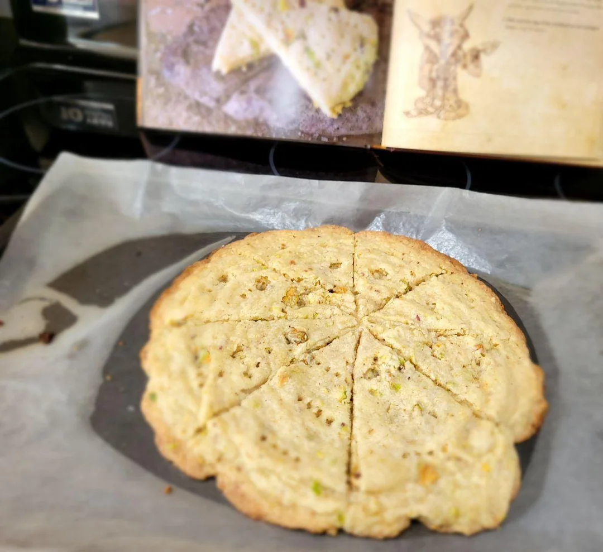

Goblin Shortbread

The goblins of the Bilgewater Cartel once thrived on the Isle of Kezan.
Although the goblins were forced to flee, this recipe made the journey
with them to Kalimdor. They’ve added some more tropical ingredients
since then, but these simple shortbread cookies will always remind goblins
of their old home.
Ingridients
-
1/2 cup salted butter, room temperature
-
1/2 cup sugar
-
Pinch nutmeg
-
1 teaspoon lime zest
-
1/4 cup pistachios, roughly chopped
-
1 1/4 cups all-purpose flour
Instructions
-
Preheat the oven to 350 ° F, and set out a baking sheet lined with parchment paper.
-
In a medium bowl, cream together the butter, sugar, nutmeg, and lime zest. Add
the pistachios and flour, and continue to work until the mixture comes together into a
good dough.
-
Turn the dough out onto the prepared baking sheet, then pat into a smooth disc
about 9 inches across. Using a sharp knife, make 5 cuts across the dough to form 10
wedges, then prick the tops of each with the tines of a fork.
-
Bake until the edges of the shortbread are just starting to brown, about 15
minutes.
Home